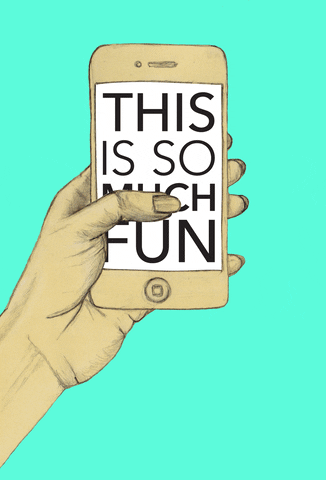

1. What was the first thing you paid attention to when interacting with the experience?

The first thing I paid attention to was the abstract image of the building or artwork. This, along with the bright and warm colors of the webpage, made me feel curious and excited, creating a desire to discover more. Unlike most websites that start with a lot of text, this one presented nothing but an abstract image, which immediately piqued my interest.
Next Question2. Spend two minutes with the experience and create a list of each of your discrete actions.

I clicked on the blank space as instructed to begin the experience.

I observed the main abstract image and text appear, interacting by hovering to reveal information about the artist's thoughts.

I started scrolling, which triggered the image of the architect to appear.


As I continued to scroll, the camera zoomed in on the architecture, and descriptions appeared like subtitles.
I continued to scroll to see the image change angles and zoom in and out.

I kept scrolling to see a video montage and an article about the building's history.

I clicked on buttons to navigate horizontally to new pages.


I watched a video explaining the design process and the section of sound engineering inside the building.

I scrolled as I see a montage of people playing music and and they trying to recreate the atmosphere of the space.

Finally, it zoom out with the same scrolling interaction, I scrolled to the end to find the "sales" section and the credits. .

Throughout the process of this, therre will be classical music playing in the background and there is this button, you can turn on or of the music. Next to it is the menu button so can go to a particular section if wanted
Last Question Next Question3. What part of the experience did you spend the most time engaging with?

I spent the most time on the first page where I hover my mouse and there are some words appear, it seems random at first but it is actually about the designer’s thoughts about the artwork so it was quite interesting to hover around to read these. It also looks like a pentool that leaves a footprint/mark after your path.
Last Question Next Question4. What was the most common action in your two minute interaction with the experience?
The most common action was scrolling. The entire experience is driven by this single interaction. I just scrolled, and the animations and movements appeared in a movie, similar to watching a film, as the website provided a lot of video content and dynamic descriptions.
Last Question Next Question
5. What is your impression of the intended primary goal of the
interactive experience?

I think the primary goal is to provide a comprehensive introduction to the design and philosophy behind the architecture. By using an abstract sketch initially, the experience intentionally makes users confused and curious. This encourages them to engage more deeply and spend time trying to understand the meaning behind the abstract form before discovering the full context.
Last Question Next Question6. How does the interactive experience communicate this primary goal?


Throughout the journey of navigating the website, every single element and interaction, especially the media like pictures or videos are related to the primary goal, constantly reminding me about the building.
Even the abstract images are about the main element, especially the match-cut part, which is the best. It makes the experience feel more meaningful, and people will remember it longer because in the beginning they don't know what the abstract picture is, and when they find out through the match cut, they will remember it longer
Last Question Next Question7. What is your impression of how the experience should be interacted with over time?
I think the experience is designed to make the audience feel immersice that they feel the experience of being in that building in a specific way and it has to be interesting enough to keep users continuing to discover the website. It is not meant to be a long experience if it is complicated, but it is a short one if it is simple and interesting.
Last Question Next Question8. How does the interactive experience communicate how it should be interacted with over time?
The experience communicates how it should be interacted with through its intuitive and simple navigation. It is designed to be interesting and fun, enhancing the user’s curiosity without requiring complex instructions. If a section is long or complicated, the design maintains a simple, singular interaction (scrolling), which makes it clear that the user should continue forward along the single-path narrative.
Last Question Next Question9. What other media forms (digital or otherwise) does the experience reference?

The experience references various media forms, including images, video (with multiple embedded clips), and sound/music. It also incorporates elements of architectural documentation like sketches and models, and presents them in a way that feels like a cinematic documentary. cinematic documentary.
Last Question Next Question10. What does this reference/s communicate to you about how you should act when engaging with your research experience?
The elements are all related to the main subject, which is the Walt Disney Hall. They constantly remind me about the Hall (main element) through the immersive experience, so after leaving the webpage, I am already very sure about what the webpage is about.
Visuals: They show evidence and make the experience less boring than if there were just words like the movement of the camera angles and the animation and the audience just need to scroll by mouse. This helps me identify which sections I might want to read more about instead of having to read everything. It also keeps people focused on the need to keep scrolling.
Sound: The music is not too loud or disturbing but somehow makes me concentrate well. I think this is because it is a classical music piece with no lyrics, so it merges well with the visuals and the content.
Last Question Next Question11. What does this reference/s communicate to you about how you should feel when engaging with your research experience?
The references are intended to make me feel calm and intellectually engaged. The classical music establishes a peaceful and sophisticated mood. Combined with the pacing and visual flow, it makes me feel like I am in a focused state, ready to absorb the content without distraction.
Last Question Next Question12. What is the most frustrating part of the interaction to you and what makes that part frustrating?
The most frustrating part I think is always the first part when I first encounter the web, and it shows this abstract image which I have no idea about. I have to find out by myself by clicking around and trying to interact in different ways to see the content.

The length was too long even though I tried to see the table of contents. Some parts are way too long that I cannot start in the middle of the content, but I have to start over again. It's getting boring over time because it mostly just has one interaction. My hand got a bit tired because I had to scroll all the time, and it was too long without many interactions throughout the process. I had to scroll it smoothly so the transitions and animations would play smoothly.
Last Question Next Question13. What is the most satisfying part of the interaction to you and what makes that part satisfying?
I love how they deliver this to the audience in a way that makes it feel like an experience of watching a movie or a show rather than scrolling a webpage. Even though most of the interaction is scrolling, they make it feel like I am an audience member watching a classic musical show by having this classical music. The animation of zooming in and out of the building is so smart and interesting to watch.Z
Last Question